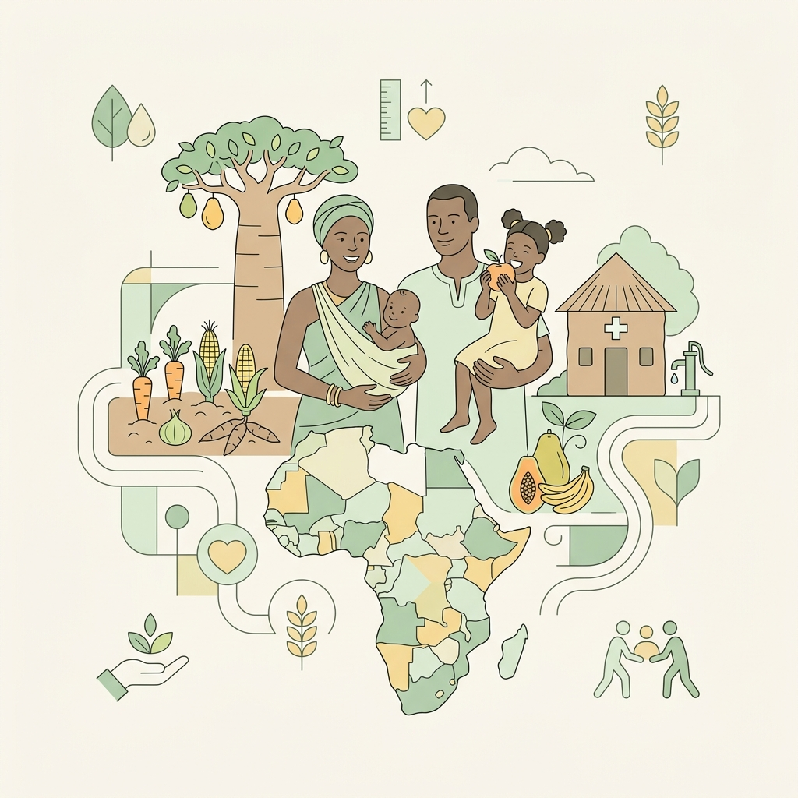

Une entreprise sociale dédiée à l'amélioration de la nutrition, de la santé et du développement socio-économique des populations africaines.

CYCAS est une entreprise sociale créée en 2021 qui œuvre dans la nutrition et la santé. Sa mission première est d’améliorer la nutrition, la santé et le développement socio‑économique des populations sénégalaises en transformant des céréales, légumineuses et fruits locaux en aliments à haute valeur nutritionnelle.
Nous nous spécialisons dans la transformation de ces produits pour proposer des farines et des solutions alimentaires adaptées aux besoins des personnes âgées, des adultes en convalescence et des groupes vulnérables. Cette orientation permet d’allier santé publique et développement local.
Un impact fort, localisé et durable.
CYCAS favorise la création d’emplois en privilégiant les associations de femmes et de jeunes pour l’approvisionnement. Par exemple, des femmes à Kédougou travaillent activement dans la récolte et la transformation de nos matières premières, stimulant l'économie rurale.
L’approvisionnement repose sur des partenariats avec des producteurs et coopératives féminines (céréales, légumineuses, fruits). Cela crée des débouchés stables et valorise les filières agricoles sénégalaises, participant à la souveraineté alimentaire.
Nos farines enrichies répondent aux besoins des adultes en convalescence, femmes enceintes, allaitantes et enfants pour prévenir la malnutrition et promouvoir l'éducation nutritionnelle accessible à tous.
CYCAS intervient en offrant un appui technique à l’élaboration de stratégies nutritionnelles, des formations, et des analyses de politiques sociales avec des institutions publiques et des ONG.
Études réalisées avec l’ESP de l’UCAD, production avec ESTEVAL, master classes avec Noflaye Center. Une ambition d'étendre la distribution en Afrique de l'Ouest tout en gardant un ancrage local.
Les seniors sont souvent négligés. CYCAS les place au cœur de sa stratégie pour préserver leur santé.
Farine composée conçue pour les seniors et la convalescence. Glucides complexes, fibres, vitamines et minéraux pour l'énergie et la digestion.
Idéale pour les bouillies. Sa richesse en fibres et protéines végétales soutient la force et la santé digestive des aînés.
Ustensiles traditionnels favorisant une cuisson douce sans excès d’huile, parfaits pour les soupes adaptées aux seniors.
Aliments complets et faciles à consommer réduisant les risques liés à l'âge.
Ingrédients des terroirs sénégalais (ex: Kédougou) avec les femmes locales.
Création d'emplois et apprentissage de modes de cuisson plus sains.
C'est une entreprise sociale qui développe des solutions nutritionnelles pour améliorer la santé des populations et renforcer les économies locales.
Découvrir nos solutions